Etude — программа для проектирования траекторий и антиколлизии
Траектории и инженерные расчёты бурения в браузере, с ИИ-помощником. Работает на сервере заказчика и на кусту без связи; проекты переносятся из EDM XML.
Для чего Etude
Проект скважины не сводится к траектории. Профиль нужно провести между соседними стволами с запасом по сближению, проверить, хватит ли нагрузки и момента, не превысит ли ЭЦП давление гидроразрыва, выдержит ли обсадная колонна. Обычно это несколько программ и таблиц, а цифры между ними переносятся вручную.
Etude объединяет эти расчёты в одном проекте: траектория, сближения по ISCWSA, нагрузки, гидравлика, колонны и сроки считаются по одной скважине, и изменение профиля сразу видно во всех расчётах. Проект проверяется до выдачи на буровую, программа на бурение выгружается в Word.
Etude нужен проектировщикам и службам ННБ сервисных компаний, геологам и супервайзерам заказчика для проверки проектов, инженерам на скважине для план/факта и прогноза на долото. Работает в браузере, на сервере компании и на кусту без связи.
Что умеет Etude
От профиля скважины до программы на бурение: траектория, сближения, нагрузки, гидравлика, колонны и сроки в одном проекте.
Профили и автоподбор
Типовые профили J, S, горизонтальные; решатель «на цель». Автоподбор траектории и всего куста с учётом соседей и ограничений: SF, интенсивность, момент.
Антиколлизия
Эллипсы неопределённости по ISCWSA, модели приборов OWSG и заказчика; коэффициент разделения и вероятность пересечения «1 к N»; матрица сближений по месторождению.
План/факт
Фактические замеры, контроль качества, отклонение от проекта и прогноз на долото.
Нагрузки и гидравлика
Вес на крюке, момент, изгиб; давление на стояке, ЭЦП, очистка ствола; спуск и подъём, управление скважиной, прихват.
Колонны и КНБК
Прочность обсадных колонн по API 5C3 и группам прочности ГОСТ 632, износ; компоновка низа бурильной колонны; цементирование.
Сроки и стоимость
График «глубина — сутки» по нормам подрядчика и стоимость скважины; сравнение вариантов проекта.
Факт с буровой
Запись станции ГТИ (LAS, CSV) разбирается на режимы. По ней подбирается фактическое трение, строятся прогноз нагрузок до забоя и тренд трения. Журналы и суточные рапорты загружаются из Excel.
Проверка программы
Проект сверяется со всеми расчётами до выдачи на буровую. Программа на бурение выгружается в Word.
Прогноз и риски
Разброс нагрузок P10–P90 и вероятность пересечения стволов «1 к N».
ИИ-помощник
Встроенный помощник DrillHarmony, российские и зарубежные модели или локальная модель на сервере компании. Отвечает по руководству, запускает расчёты и открывает окна по просьбе словами. Считает программа.
На кусту без связи
Ствол берётся на куст: работа на ноутбуке без интернета, правки уходят на сервер, когда появляется связь.
Совместная работа
Обсуждение, подписи «разработал — проверил — утвердил», версии проекта. Импорт и выгрузка EDM XML, замеры из Excel; отчёты в PDF, Excel и Word.
Спросите словами, Etude посчитает
Помощник понимает инженерную просьбу на обычном языке, запускает нужный расчёт в программе, открывает окна и объясняет результат. Все числа считает Etude по своим методикам, модель не подставляет цифры от себя.
Пересчёт по просьбе
«Что если…»: плотность, трение, интенсивность, глубина. Помощник меняет параметры и запускает расчёт нагрузок, гидравлики или сближений. Результат можно записать в проект или отменить.
Управление программой
Открывает окна и пункты меню по просьбе: план/факт, сближения, программу на бурение. Новичку не нужно искать, где что лежит.
Ответы по руководству
Отвечает на вопросы о работе в Etude по встроенному руководству и объясняет, из чего получился результат расчёта.
Учится на ваших данных
Накопленные вопросы инженеров и скважины организации помогают помощнику точнее понимать ваши задачи и терминологию.
Встроенный помощник DrillHarmony
Работает без внешних сервисов, данные не покидают ваш сервер. Без связи отвечает по руководству и базе знаний на этом компьютере.
Российские и зарубежные модели
По выбору организации облачная модель, например GigaChat или YandexGPT. Текст запросов обрабатывает выбранный провайдер, решать вам.
Локальная модель
Модель на сервере компании: запросы не выходят за её периметр. Поможем развернуть и подобрать оборудование.
Посчитать скважину самому
Etude работает в браузере, поэтому инженеру не нужны сервер компании и отдел ИТ. Личный доступ подходит тем, кто проектирует и проверяет сам: на подработке, между вахтами, для второго мнения.
Фриланс-проектирование
Профиль скважины, проверка сближений, нагрузки и гидравлика для небольшого заказчика. На выходе программа на бурение в Word и отчёты в PDF и Excel, а не скриншоты из таблицы.
Второе мнение
Проверить чужой проект до выдачи на буровую: коэффициент разделения по ISCWSA, интенсивность, момент и ЭЦП по тем же методикам, что в компании.
Сопровождение на скважине
План/факт и прогноз на долото по своим замерам, когда под рукой только ноутбук. На кусту без связи работа продолжается, проект синхронизируется позже.
Рост в профессии
Разобраться в антиколлизии, нагрузках и колоннах на учебных скважинах и прийти на собеседование с собственными проектами. ИИ-помощник подскажет, где что лежит.
- РегистрацияЛогин и пароль, без договора и установки.
- ПроектНовая скважина с нуля или перенос из EDM XML или Excel.
- РезультатТраектория, сближения, нагрузки и программа на бурение в одном проекте.
Проекты хранятся в вашем личном кабинете. Подпись под проектом для заказчика остаётся за инженером: Etude считает по методикам и показывает, из чего получен каждый результат.
Как выглядит программа
Все данные на снимках учебные. Нажмите на снимок, чтобы увеличить.
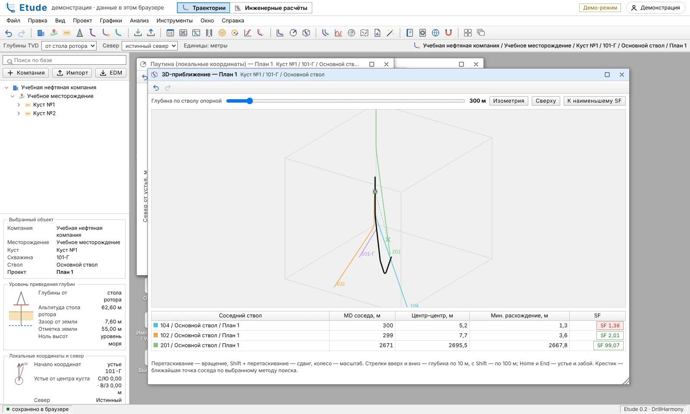
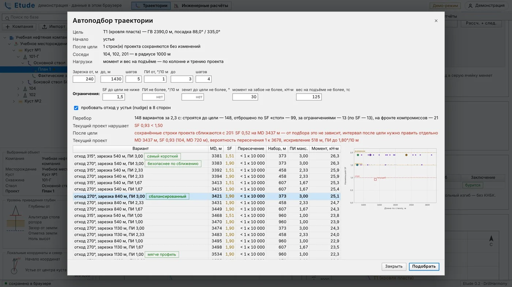
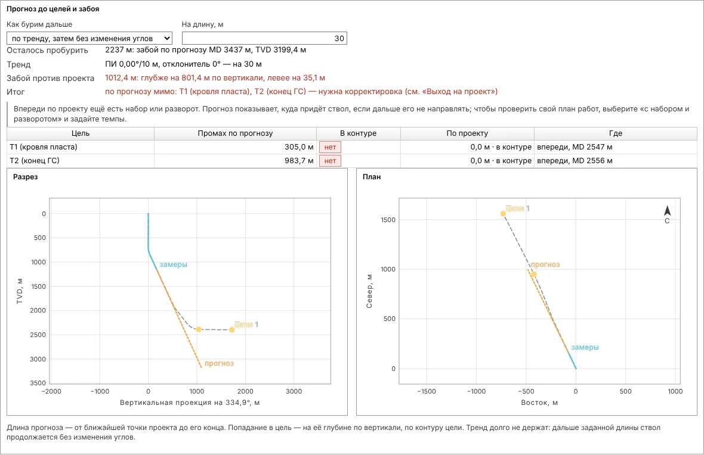
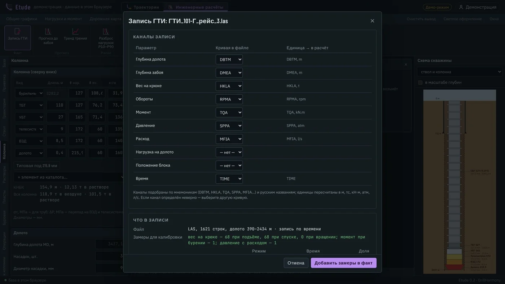
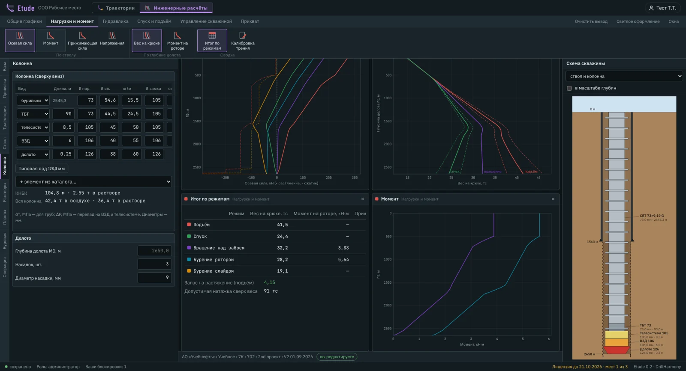
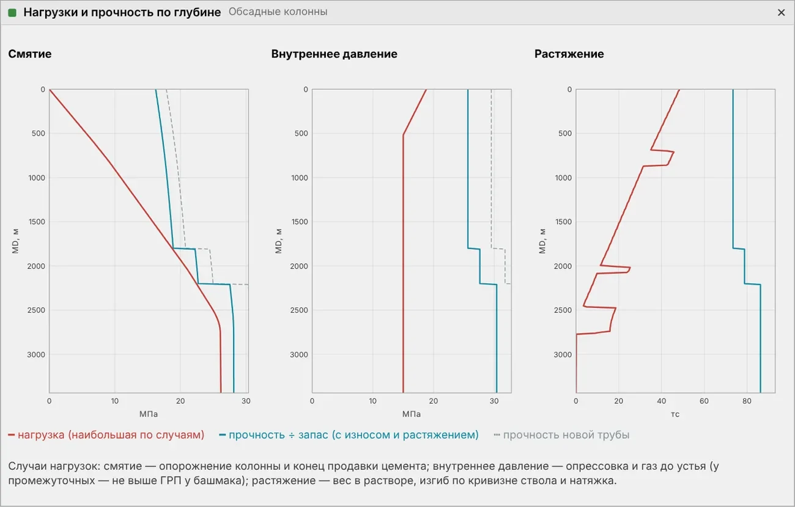
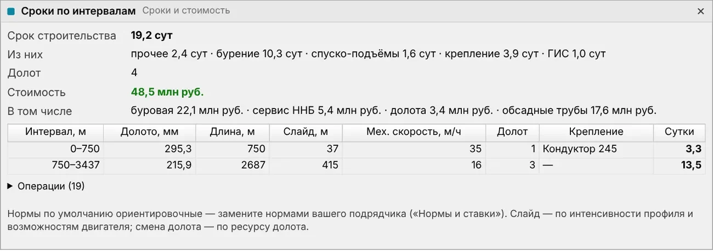
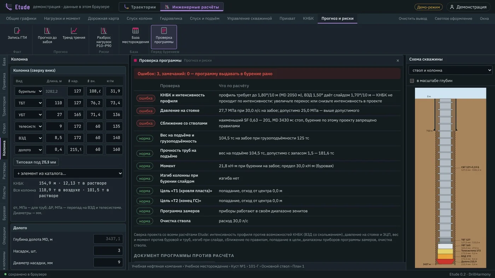
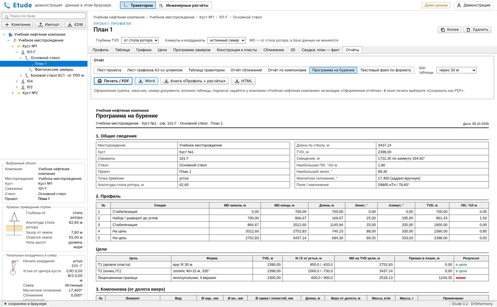
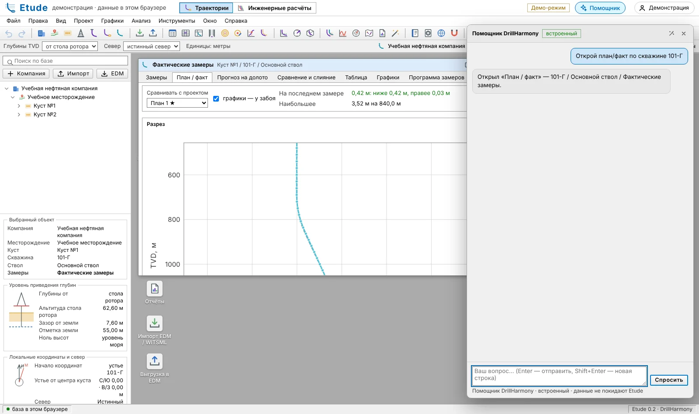
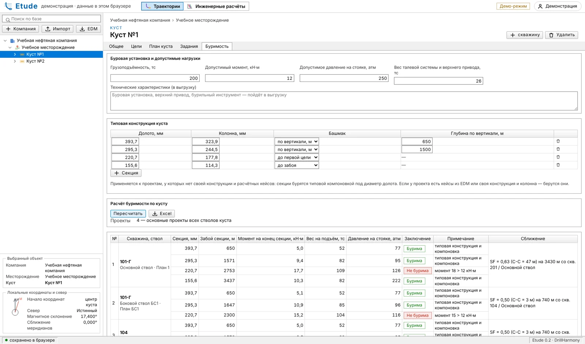
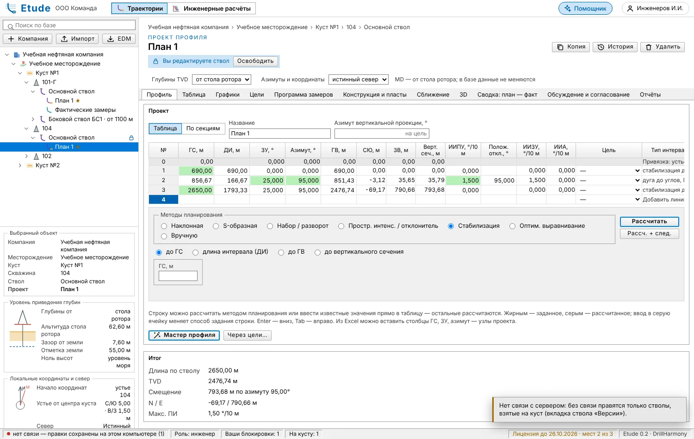
Etude наглядно
Проекты переезжают без потерь
Перед внедрением первым делом спрашивают, как перенести проекты из привычной программы. Etude открывает существующие проекты, сохраняет точность и не запирает данные.
Выгрузка обратно в EDM XML
Проекты, замеры, цели, программы замеров, модели приборов и конструкцию можно выгрузить в EDM 5000 XML. Данные остаются вашими, переход обратим.
Точность до долей миллиметра
На 25 реальных траекториях заказчика координаты после импорта совпали с исходной программой: фактические стволы до 0,0000 м, проекты до 0,5 мм. Что не перенеслось, Etude показывает в отчёте.
Российские системы координат
ГСК-2011, СК-42, СК-95, ПЗ-90.11, МСК и WGS-84, проекции Гаусса — Крюгера и UTM, сближение меридианов. Магнитное склонение считается по моделям WMM‑2025 и IGRF‑14 на дату.
Подробнее о переносе в статье Импортозамещение ПО для проектирования траекторий скважин: как перейти без потери проектов.
Как начать работать
Показываем Etude на учебных данных или на вашем кусте, отвечаем на вопросы инженеров.
Импортируем проекты из EDM XML, подключаем модели приборов и нормы подрядчика.
В облаке DrillHarmony или на сервере компании. Инженеры работают в браузере, обновление ставится одной командой.
Частые вопросы об Etude
Нужно ли устанавливать Etude на компьютер?
Нет. Etude работает в браузере. Программу можно использовать в облаке DrillHarmony или установить на сервер компании; ключей защиты нет, обновляется одной командой.
Можно ли работать на кусту без интернета?
Да. Инженер берёт ствол на куст и работает на ноутбуке без связи. Правки копятся и уходят на сервер, когда связь появляется.
Какие модели погрешностей используются для антиколлизии?
Эллипсы неопределённости считаются по методике ISCWSA, с моделями приборов OWSG и собственными моделями заказчика. Программа показывает коэффициент разделения, вероятность пересечения стволов и матрицу сближений по месторождению.
Можно ли перенести проекты из других программ?
Да. Проекты переносятся из EDM XML, замеры из Excel. Обратно проекты выгружаются в EDM 5000 XML, отчёты в PDF, Excel и Word.
Считает ли ИИ-помощник сам?
Нет. Все расчёты делает программа. Помощник понимает просьбу словами, отвечает по руководству, запускает расчёты и открывает нужные окна. Встроенный помощник работает без внешних сервисов; по выбору организации можно подключить российскую или зарубежную облачную модель или локальную модель на сервере компании.
Где хранятся данные?
На сервере вашей компании или в облаке DrillHarmony на серверах в России.
Работает ли ИИ-помощник без интернета?
Да. Без связи встроенный помощник отвечает по руководству и базе знаний на этом компьютере. Вопросы, на которые он не ответил, уходят на сервер, когда связь появится.
Уходят ли данные во внешние сервисы?
Со встроенным помощником или своей моделью на сервере компании нет. Если организация выберет облачную модель, текст запросов обрабатывает её провайдер.
Можно ли доверять расчётам помощника?
Помощник не считает сам: он запускает расчёты Etude по тем же методикам, что и при работе вручную, и показывает, какие параметры изменил. Инженер видит результат и решает, записывать ли его в проект.
Можно ли работать в Etude одному, без компании?
Да. Личный доступ нужен инженеру, который проектирует и проверяет сам: фриланс, второе мнение по чужому проекту, сопровождение скважины. Нужен только браузер.
Как получить доступ?
Инженер получает личный доступ, компания подключается в облаке DrillHarmony или на своём сервере. Etude в раннем доступе: оставьте заявку, и мы откроем доступ или покажем программу на ваших данных.
Посмотреть Etude
Откройте программу или напишите на info@drillharmony.com, и мы покажем её на учебных данных или на вашем кусте.